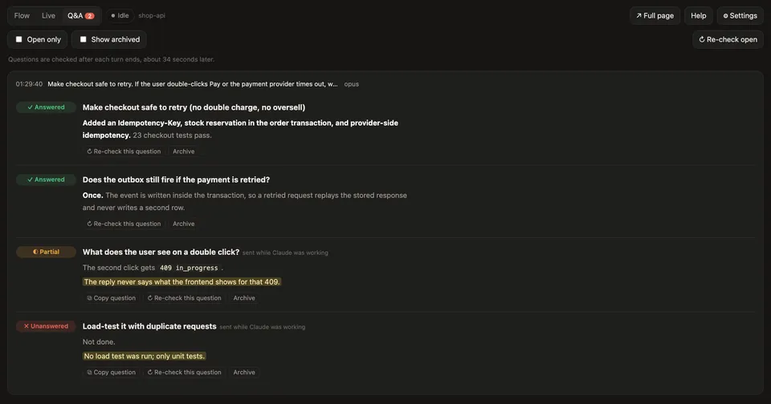
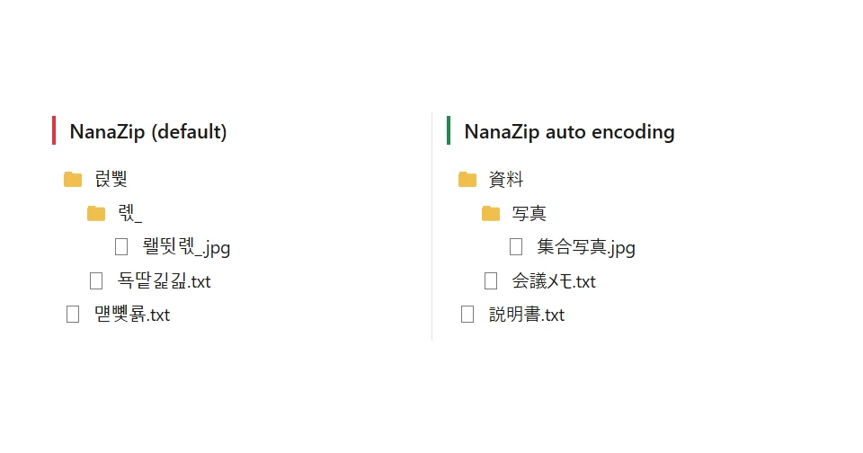

작은 도구들, 마음껏 써 보세요.
제 불편을 풀려고 만든 것들을 GitHub에 올려 두었습니다. 잘 다듬은 것도, 대충 만든 것도 있어요. 어디서 쓸지로 골라 보세요.
웹사이트가 있는 프로젝트
안드로이드 폰에서
브라우저에서
Claude 안에서
-
Dice Roguelife
여기서 오셨어요
주사위가 세계, 종족, 재능을 정하고 Claude가 그 인생을 웹소설처럼 들려주는 로그라이크 채팅 게임. 한국어, 영어, 일본어.
-
Language mistake tracker
여기서 오셨어요
대화 중 Claude가 고쳐 준 표현을 복습 시트로 모아 줍니다. 자주 하는 실수, 반복되는 습관, 외우기 쉬운 규칙까지.
-

Side Insights
여기서 오셨어요
Claude Code 옆에 붙는 패널. 질문에 빠짐없이 답했는지 확인하고, 바뀐 코드의 흐름을 짚어 주고, 도구 호출을 실시간으로 보여 줍니다.
컴퓨터에서
-

NanaZip auto encoding
여기서 오셨어요
NanaZip으로 압축을 풀 때 파일 이름 인코딩을 알아서 골라 주는 윈도우 우클릭 메뉴. 일본어 ZIP 이름이 더 이상 깨지지 않습니다.
-
subsync-repair
여기서 오셨어요
중간중간 싱크가 어긋나는 자막을 다른 언어 자막에 맞춰 고칩니다. 명령줄, Bazarr 훅, 로컬 서버로 쓸 수 있습니다.
-
otpauth-to-2fas
여기서 오셨어요
iOS OTP Auth 백업을 풀어 Aegis 보관함으로 만들어, 2FAS나 Aegis로 한 번에 옮깁니다. QR 코드를 하나씩 찍지 않아도 됩니다.